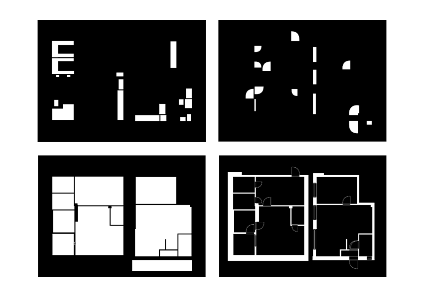
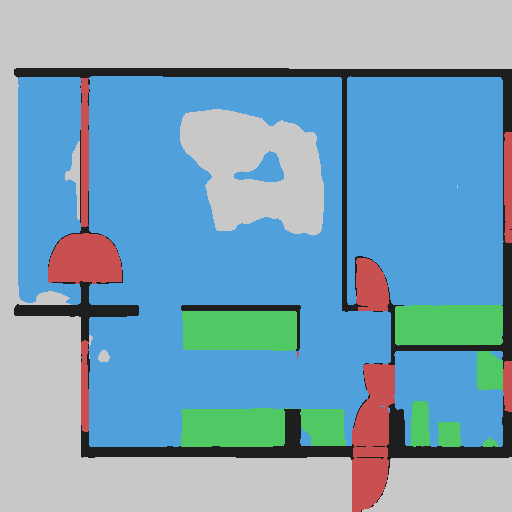
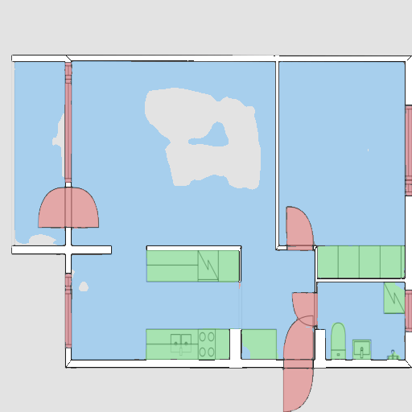
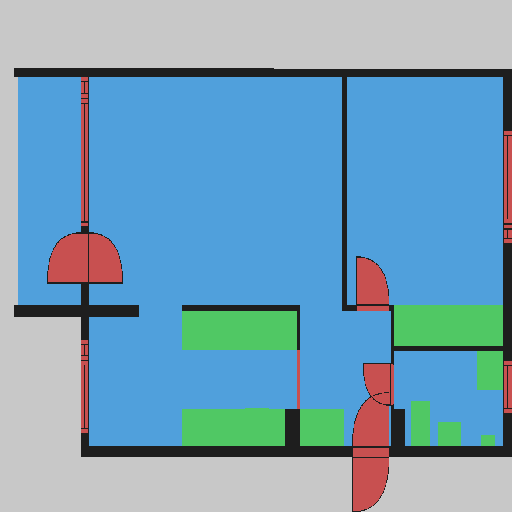
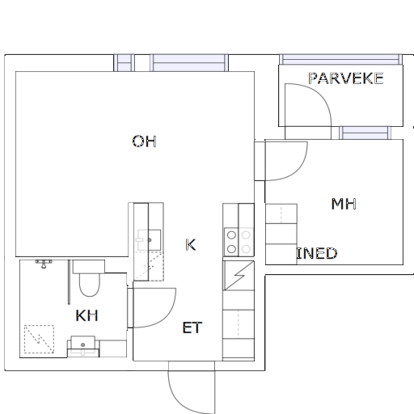
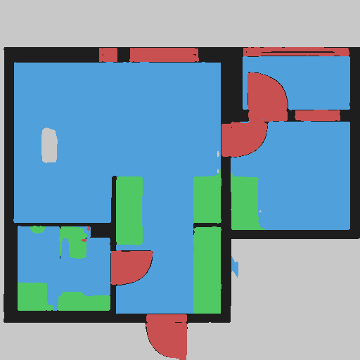
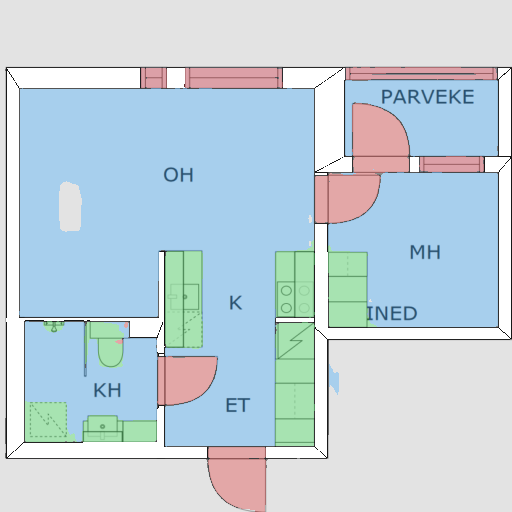
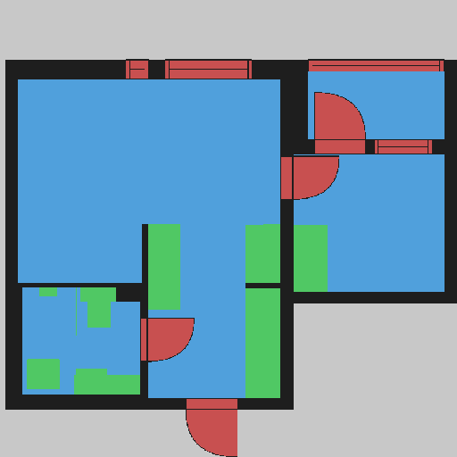

Neural Floorplan
Github
Raster floorplan / color-coded sketch → semantic segmentation → (planned) classified vector CAD
Deep Learning · Semantic Segmentation · Transfer Learning · CAD Automation
Stack:
Python 3.11 · PyTorch · HuggingFace Transformers (SegFormer)
OpenCV · Shapely · pytest · ruff
Overview
Architectural drawings exist in two very different forms. Vector-based formats
(DWG, SVG) encode walls, doors, and rooms as typed geometry — queryable, editable,
machine-readable. Raster formats (scanned blueprints, photo-captured sketches,
rendered PNGs) are just pixels, stripped of semantic identity. The problem is that
the raster form is far more common in practice: architects sketch on paper, older
documents were never digitized properly, and real-world handoffs often produce
images rather than source files.
This project builds a supervised learning pipeline that converts raster floorplans
— including color-coded hand-drawn sketches — into per-pixel semantic segmentation
masks, and (as a planned next step) into clean classified vector geometry exported
as JSON. The segmentation stage is complete; the vectorization stage is under
development.
The problem is genuinely hard. Raster floorplans are visually inconsistent: line
weights vary, scans introduce noise, rooms with different functions are drawn
identically in greyscale, and the same plan may appear at wildly different
resolutions. Producing pixel-accurate class labels from this input requires a model
that generalizes across these variations rather than memorizing individual drawings.
Pipeline
The full pipeline has eight stages. Stages 1–6 are complete; stages 7–8 are
planned. The diagram below uses color to distinguish them.
Input Data
Dataset — CubiCasa5K
The primary dataset is
CubiCasa5K,
a collection of ~5,000 residential floor plan images paired with SVG vector
annotations. Each SVG encodes walls, openings (doors/windows), room polygons,
and icons as typed geometry. The
high_quality_architectural subset
was used throughout.
Data-quality strategy
The original raster images in CubiCasa5K are scraped from real estate listings.
They are often misaligned with the SVG annotations, inconsistently scaled,
or visually noisy. Using them directly as training inputs would introduce
label noise — the pixel-level class boundary in the mask would not accurately
correspond to what the raster image shows.
To address this, the dataset was built in two parts:
(a) Clean-subset rasters. A hand-selected subset of original raster images
where the visual content is clearly aligned with the SVG annotation. These are
kept as-is because their raster↔mask correspondence is trustworthy.
(b) SVG-rasterized images (spec_v003). For the rest of the dataset, the
raster is generated by rendering the SVG directly — walls, rooms, and openings
are drawn onto a white background as a
model_clean.png. Because
the raster and the mask both originate from the same SVG source, their alignment
is exact by construction.
The rationale: reliable supervised segmentation requires clean, exactly-aligned
input↔label pairs. Messy or misaligned originals inject label noise that
degrades training signal and ultimately hurts generalization.
 Original raster (CubiCasa5K)
Original raster (CubiCasa5K)
 SVG-rendered clean raster (model_clean.png)
SVG-rendered clean raster (model_clean.png)

Semantic class map (ground truth mask)Class legend
0 — background
1 — wall
2 — opening (door/window)
3 — room
4 — icon (furniture/fixtures)
1 — wall
2 — opening (door/window)
3 — room
4 — icon (furniture/fixtures)
Data Augmentation
Sketch-style augmentation (spec_v004) is applied offline before training.
Each spatial transform is applied identically to the input image and all
mask files to preserve pixel-level alignment. Pixel-level variations
(blur, brightness) are applied to the image only — never to semantic masks,
which would corrupt class-boundary accuracy.
The goal is twofold: (1) make the model robust to the variation seen in real,
hand-drawn, or inconsistently-scanned floorplans; (2) multiply the effective
training set size from a limited corpus of clean, aligned pairs.
Augmentation pipeline (verified from source)
horizontal flip (50% prob) — spatial symmetry; floor plans are equally valid mirrored
vertical flip (50% prob) — same rationale as horizontal
90° rotation (k ∈ {0,1,2,3}) — plans presented at any cardinal orientation
translation ±10 px — slight positional shift simulating imprecise scans
Gaussian blur r ∈ [0.3, 1.0] — simulates scan softness, low-resolution input
brightness × [0.85, 1.15] — exposure variation in scanned/photographed drawings
horizontal flip (50% prob) — spatial symmetry; floor plans are equally valid mirrored
vertical flip (50% prob) — same rationale as horizontal
90° rotation (k ∈ {0,1,2,3}) — plans presented at any cardinal orientation
translation ±10 px — slight positional shift simulating imprecise scans
Gaussian blur r ∈ [0.3, 1.0] — simulates scan softness, low-resolution input
brightness × [0.85, 1.15] — exposure variation in scanned/photographed drawings
 Original
Original
 Horizontal flip
Horizontal flip
 Vertical flip
Vertical flip
 90° rotation
90° rotation
 Gaussian blur (r = 2.5)
Gaussian blur (r = 2.5)
 Brightness × 0.78
Brightness × 0.78
Model Architecture
SegFormer backbone (frozen)
SegFormer
is a transformer-based semantic segmentation architecture. Its encoder is a
hierarchical (multi-scale) Mix Transformer (MiT) that produces feature maps at
four resolutions — 1/4, 1/8, 1/16, and 1/32 of the input. Rather than fixed
positional encodings, it uses overlapping patch embeddings and Mix-FFN layers,
which gives it robustness to varying input resolutions. This matters for
floorplans, which come in a wide range of pixel dimensions.
This project uses SegFormer-B0 (
nvidia/mit-b0), the lightest
variant, with encoder stage channel widths of [32, 64, 160, 256]. The backbone
is loaded with pretrained ImageNet weights and then fully frozen — no
gradient flows through it during training. As an optimization, backbone features
are extracted once per image and cached to disk; the frozen forward pass is never
called during training epochs.
Frozen-backbone transfer learning. The SegFormer encoder is pretrained on
ImageNet and its weights are locked — no gradients flow through it during training.
Backbone feature extraction runs once per image and the results are cached to disk;
the encoder forward pass is not invoked again for the rest of training. Only the
custom decoder head is optimized. This strategy is appropriate here because the
supervised dataset is small relative to the model capacity: fine-tuning the full
encoder would overfit, while the cached-feature approach reduces per-epoch compute
to the cost of the decoder alone.
FloorplanDecoder (trainable)
The decoder receives the four frozen multi-scale feature maps, fuses them into a
single representation at H/4 × W/4 resolution, refines with two convolutional
hidden layers, and upsamples to the full 512 × 512 output. All parameters are
trained from scratch.
FloorplanDecoder — layer-by-layer (verified from models.py)
IN Backbone hidden states: 4 tensors, ch widths [32, 64, 160, 256] (B0)
→ Projection: 1×1 Conv per stage → 256 ch each
→ Upsample all to stage-0 res (H/4 × W/4), element-wise sum
→ Conv 3×3 → 256 ch · BatchNorm2d · GELU · Dropout2d(0.1) hidden 1
→ Conv 3×3 → 128 ch · BatchNorm2d · GELU · Dropout2d(0.1) hidden 2
→ 1×1 Conv → 5 classes (logits)
OUT Bilinear upsample → [B, 5, 512, 512]
IN Backbone hidden states: 4 tensors, ch widths [32, 64, 160, 256] (B0)
→ Projection: 1×1 Conv per stage → 256 ch each
→ Upsample all to stage-0 res (H/4 × W/4), element-wise sum
→ Conv 3×3 → 256 ch · BatchNorm2d · GELU · Dropout2d(0.1) hidden 1
→ Conv 3×3 → 128 ch · BatchNorm2d · GELU · Dropout2d(0.1) hidden 2
→ 1×1 Conv → 5 classes (logits)
OUT Bilinear upsample → [B, 5, 512, 512]
Training configuration (verified)
| Variant | SegFormer-B0 (nvidia/mit-b0) |
| Input size | 512 × 512 px |
| Classes | 5 — background, wall, opening, room, icon |
| Loss | CrossEntropy (use_dice: false) |
| Optimizer | AdamW |
| Scheduler | CosineAnnealingLR (T_max = epochs) |
| Learning rate | 6 × 10⁻⁵ |
| Weight decay | 0.01 |
| Batch size | 4 |
| Epochs | 50 |
| Mixed precision | enabled (torch.amp) |
| Metrics logged | loss and mIoU (per-class IoU available) |
| Checkpointing | best (by val mIoU) + latest saved each epoch |
| Seed | 42 |
Results — Segmentation Output
Preview images are saved every 5 epochs. The examples below are from epoch 50
(end of training). Each row shows four panels for one sample: the input raster,
the model's predicted mask, a color overlay of the prediction on the input, and
the ground-truth target mask.
Quantitative mIoU: [TODO: insert final validation mIoU from checkpoint metadata]
Sample 03 — epoch 50
 Input
Input

Prediction
Overlay
TargetSample 04 — epoch 50

Input
Prediction
Overlay
TargetRoadmap
The pipeline is complete through semantic segmentation and evaluation.
The remaining two stages convert pixel-level masks into structured, classified
vector geometry — the "to CAD" half of the original goal.
- 01 Dataset loading — CubiCasa5K, high_quality_architectural subset done
-
02
SVG / raster preprocessing — CubiCasa SVG annotations rendered to
model_clean.png(spec_v003) done - 03 Semantic mask generation — per-class masks from SVG geometry done
- 04 Sketch-style augmentation — flip, rotate, translate, blur, brightness (spec_v004) done
- 05 Segmentation model training — SegFormer-B0, frozen backbone, custom decoder, AdamW, 50 epochs (spec_v005) done
- 06 Evaluation — loss and mIoU logged per epoch; best checkpoint saved by val mIoU (spec_v006) done
- 07 Mask-to-vector post-processing — contour extraction, polyline simplification, orthogonal snapping (Shapely, spec_v007) planned
- 08 Classified CAD-like JSON export — wall centerlines + thickness, opening geometry, room polygons + type (spec_v008) planned
Stage 7 will use Shapely to extract contours from predicted masks, simplify
polylines, and snap geometry to an orthogonal grid. Stage 8 will produce a
structured JSON file classifying each element by type — walls with centerlines
and thickness, openings attached to host walls, room polygons with inferred
type labels. This output is the structured, machine-readable form that a
downstream CAD or BIM tool could consume directly.
Technical Stack
| Language | Python 3.11 |
| Deep learning | PyTorch (mixed-precision training via torch.amp) |
| Model | Hugging Face Transformers — SegFormer (nvidia/mit-b0) |
| Raster processing | OpenCV, Pillow |
| Vector geometry | Shapely (planned, stages 7–8) |
| Testing / lint | pytest · ruff (format + check) |
| Environment | conda env floorplan-cad |
| Workflow | Spec-driven development — versioned specs in /specs, one spec at a time, feature branches, commit only after test+lint pass |